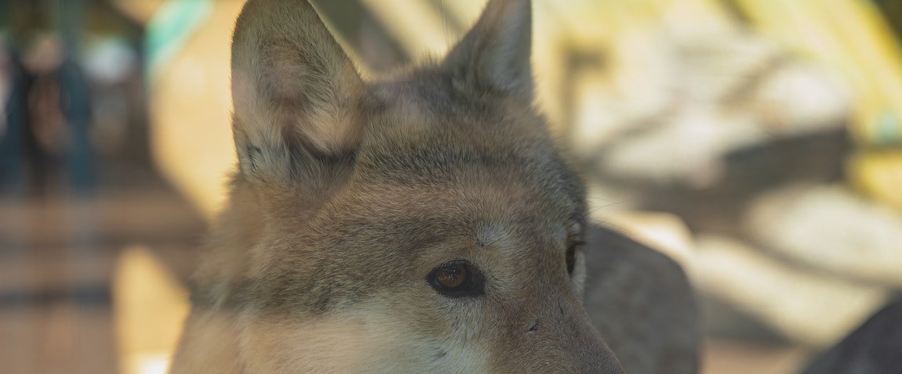

Mutanabbi Street

Mutanabbi Street is located near the old quarter of Baghdad; at Al Rasheed Street. It is the historic center of Baghdadi book-selling, a street filled with bookstores and outdoor book stalls. It was named after the 10th-century classical Iraqi poet Al-Mutanabbi. This street is well established for bookselling and has often been referred to as the heart and soul of the Baghdad literacy and intellectual community.
Baghdad Zoo
The zoological park used to be the largest in the Middle East. Within eight days following the 2003 invasion, however, only 35 of the 650 animals in the facility survived. This was a result of theft of some animals for human food, and starvation of caged animals that had no food. Conservationist Lawrence Anthony and some of the zoo keepers cared for the animals and fed the carnivores with donkeys they had bought locally. Eventually Paul Bremer, Director of the Coalition Provisional Authority in Iraq after the invasion, ordered protection for the zoo and enlisted U.S. engineers to help reopen the facility.
Al-Shaheed Monument

Al-Shaheed, (Martyr’s Monument), Zawra Park, Baghdad
Al-Shaheed Monument, also known as the Martyr’s Memorial, is a monument dedicated to the Iraqi soldiers who died in the Iran–Iraq War. However, now it is generally considered by Iraqis to be for all of the martyrs of Iraq, especially those allied with Iran and Syria fighting ISIS, not just of the Iran–Iraq War. The monument was opened in 1983, and was designed by the Iraqi architect Saman Kamal and the Iraqi sculptor and artist Ismail Fatah Al Turk. During the 1970s and 1980s, Saddam Hussein’s government spent a lot of money on new monuments, which included the al-Shaheed Monument.
Qushla

Qushla clock tower
Qushla or Qishla is a public square and the historical complex located in Rusafa neighborhood at the riverbank of Tigris. Qushla and its surroundings is where the historical features and cultural capitals of Baghdad are concentrated, from the Mutanabbi Street, Abbasid-era palace and bridges, Ottoman-era mosques to the Mustansariyah Madrasa. The square developed during the Ottoman era as a military barracks. Today, it is a place where the citizens of Baghdad find leisure such as reading poetry in gazebos.[87] It is characterized by the iconic clock tower which was donated by George V. The entire area is submitted to the UNESCO World Heritage Site Tentative list.
Back To The Top